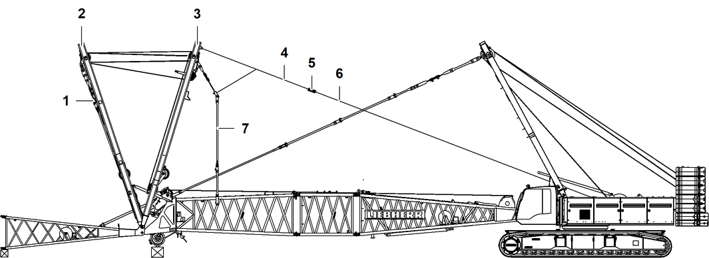

A-Bock2/A-Bock3 mit Seil der Winde1/Winde2 aufrichten und hydraulische Rückfallstützen verbolzen
ACHTUNG
Falsche Bedienung der Nadelausleger-Verstellwinde!
Beschädigung von A-Bock2 und/oder A-Bock3.
Wenn A-Bock2 in Transportposition mit A-Bock-Abstützungen auf A-Bock3 liegt: | |
Nadelausleger-Verstellwinde ausschließlich senken. | |
ACHTUNG
Kollision der Seilrollen am A-Bock2 und den Nackenseilrollen am Hauptausleger-Kopf!
Beschädigung der Maschine.
Aufrichtvorgang des A-Bock2 rechtzeitig stoppen. |
ACHTUNG
Unzulässiges Unterschreiten des Mindestmaßes der sichtbaren Kolbenstange der hydraulischen Rückfallstützen!
Beschädigung der Maschine.
Aufrichtvorgang des A-Bock2 rechtzeitig stoppen. |
Aufrichtvorgang des A-Bock3 rechtzeitig stoppen. |
A-Bock3 mit Nadelausleger-Verstellwinde nach vorne absenken. |
Sicherstellen, dass folgende Voraussetzungen erfüllt sind:
❑ | Ein Einweiser mit Sprechfunkeinrichtung überwacht den gesamten Vorgang. |

Fig. 5522: A-Bock2/A-Bock3 in Verbolzungsposition der hydraulischen Rückfallstützen aufrichten
A-Bock2 3 mit Seil 6 der Winde1/Winde2 aufrichten und zugleich A-Bock3 2 bei Bedarf nach vorne absenken. |
Hydraulische Rückfallstützen rutschen auf den Führungsschienen in Richtung Verbolzungspunkte am Hauptausleger-Kopf. |
Wenn die Verbolzungspunkte der hydraulischen Rückfallstützen mit den Verbolzungspunkten am Hauptausleger-Kopf übereinstimmen: | |
Aufrichtvorgang stoppen. | |
Hydraulische Rückfallstütze 1 mit Bolzen 4 verbolzen. |
Bolzen 4 mit Scheibe 2 und Sicherungsfeder 3 sichern. |
Vorgang auf gegenüberliegender Seite wiederholen. |